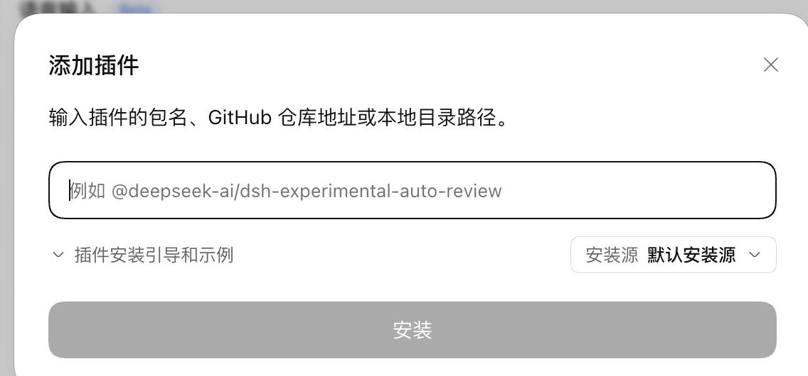

~/.dsh/sessions/--Users-demo-work-atlas-web--/session-9ae63359-a2e7-4265-b116-578cdc2dd232/session.v3.jsonl.zstd
一次 assistant/message 事件带一份 provider 上报的 usage
按 turn / step 槽位去重，重试单独计费
归档的会话照样读，删除的才算没有


当前生效费率 CNY / 百万 tokens
| 匹配 | 输入 | 缓存命中 | 缓存写入 | 输出 |
|---|---|---|---|---|
| v4-pro | 4.5 | 0.15 | 4.5 | 13.5 |
| flash | 1 | 0.02 | 1 | 4 |
| 默认费率 | 1 | 0.02 | 1 | 4 |
花费 = Σ（token × 费率）÷ 1,000,000
高峰 09:00–12:00、14:00–18:00（北京时间）费率 ×2
高峰 09:00–12:00、14:00–18:00（北京时间）费率 ×2
$
对话框里粘贴同一个包名：dsh-local-usage
安装源保持「默认安装源」，点安装

dsh 客户端 · 插件 → 添加插件
npm package
npmjs.com/package/dsh-local-usage
- install
- dsh plugin add dsh-local-usage
- repo
- github.com/webxiaobaiyu-droid/dsh-local-usage